library(terra)Shipping traffic
R
ggplot2
English
Y2025
In this blog post, I demonstrate how to visualize shipping traffic data using R. The tutorial covers downloading the dataset from EMODnet, performing exploratory data analysis, and creating a map using ggplot2.
Intro
The Vessel Density maps in the EU are created since the 2019 by Cogea for the European Marine Observation and Data Network EMODnet. The dataset is updated every year and is available for viewing and download on EMODnet Human Activities web portal (https://emodnet.ec.europa.eu/en/human-activities).
The maps are based on AIS data yearly purchased from Collecte Localisation Satellites (CLS) and ORBCOMM. The maps, GeoTIFF format, show shipping density in 1x1km cells of a grid covering all EU waters and some neighbouring areas.
Density is expressed as hours per square kilometre per month. The following ship types are available:0 Other, 1 Fishing, 2 Service, 3 Dredging or underwater ops, 4 Sailing, 5 Pleasure Craft, 6 High speed craft, 7 Tug and towing, 8 Passenger, 9 Cargo, 10 Tanker, 11 Military and Law Enforcement, 12 Unknown and All ship types.
Data are available by month of year. Yearly averages are also available.
Data
To download go to EMODnet Map Viewer > Catalogue > EMODnet Human Activities > Vessel density > Monthly totals 2017-2023 > All Types > Click on the “i” icon > Select Download.
A zip file named “EMODnet_HA_Vessel_Density_all_2017-2023 would be downloaded. For the period of December 2023, the raster information is under vesseldensity_all_20231201.tif.
Load
To download test data in tif format click here.
Use the package terra to use the function rast.
The function rast reads your file as a formal class SpatRaster. Here I am using the file directly from the repository.
ShippingTraffic_tif<-'https://github.com/MiriamLL/data_supporting_webpage/raw/refs/heads/main/Blog/2025/ShippingTraffic/ShippingTraffic_crop.tif'ShippingTraffic<-rast(ShippingTraffic_tif)crs(ShippingTraffic)ggplot2::ggplot() +
tidyterra::geom_spatraster(data = ShippingTraffic) +
NULL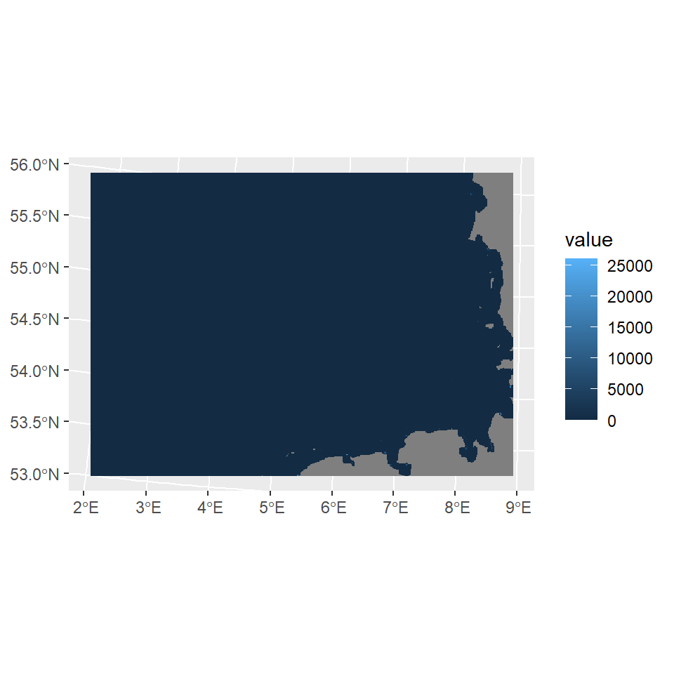
Data frame
library(tidyverse)ShippingTraffic_df <- as.data.frame(ShippingTraffic, xy = TRUE)
beepr::beep(sound=1)The function rename, allows to change the name of the column. The density information is in the third column.
ShippingTraffic_df<-ShippingTraffic_df %>%
rename(vessel_density=3)Check if the density values are plausible.
range(ShippingTraffic_df$vessel_density)[1] 0.00 26050.14Values distribution
hist(ShippingTraffic_df$vessel_density)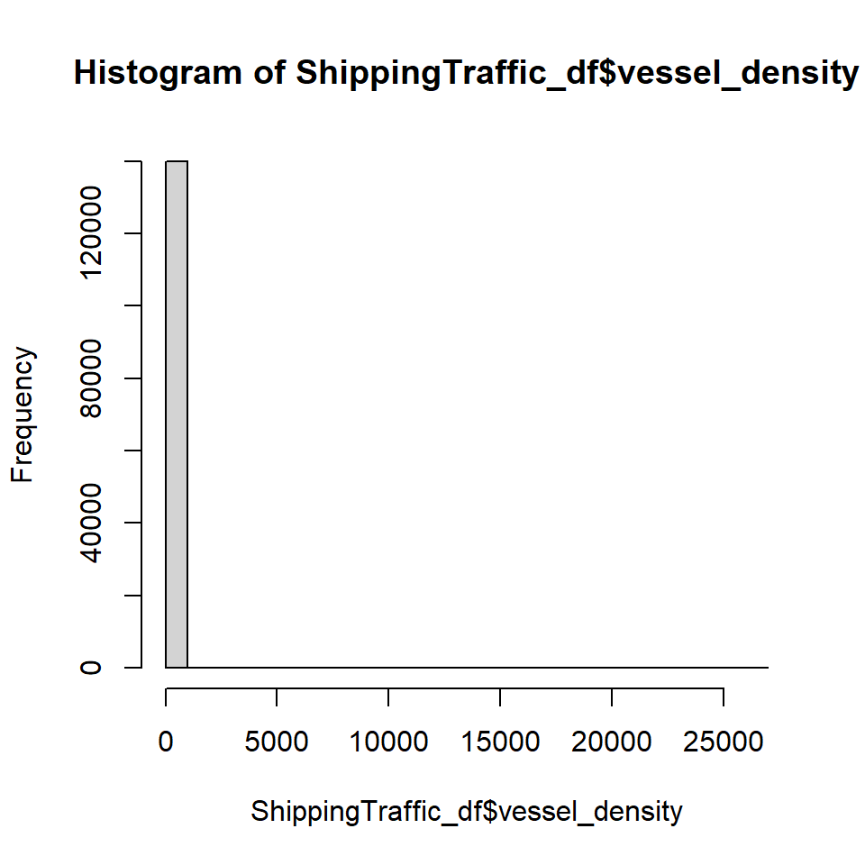
ShippingTraffic_class<-ShippingTraffic_df %>%
mutate(
density_class = case_when(
vessel_density <= 0 ~ "class_A_0",
vessel_density > 0 & vessel_density < 1 ~ "class_A_0_1",
vessel_density > 1 & vessel_density < 2 ~ "class_A_1_2",
vessel_density > 2 & vessel_density < 3 ~ "class_A_2_3",
vessel_density > 3 & vessel_density < 4 ~ "class_A_3_4",
vessel_density > 4 & vessel_density < 5 ~ "class_A_4_5",
vessel_density > 5 & vessel_density < 6 ~ "class_A_5_6",
vessel_density > 6 & vessel_density < 7 ~ "class_A_6_7",
vessel_density > 7 & vessel_density < 8 ~ "class_A_7_8",
vessel_density > 8 & vessel_density < 9 ~ "class_A_8_9",
vessel_density > 9 & vessel_density < 10 ~ "class_A_9_10",
vessel_density >= 10 & vessel_density < 100 ~ "class_B_10_100",
vessel_density >= 100 & vessel_density < 1000 ~ "class_C_100_1000",
vessel_density >= 1000 & vessel_density < 10000 ~ "class_D_1000_10000",
vessel_density >= 10000 & vessel_density < 100000 ~ "class_E_10000_100000",
TRUE ~ "unknown"
))The majority of values are between 0 and 1
| density_class | n |
|---|---|
| class_A_0 | 65547 |
| class_A_0_1 | 56142 |
| class_A_1_2 | 7544 |
| class_A_2_3 | 2629 |
| class_A_3_4 | 1324 |
| class_A_4_5 | 827 |
| class_A_5_6 | 701 |
| class_A_6_7 | 533 |
| class_A_7_8 | 463 |
| class_A_8_9 | 396 |
| class_A_9_10 | 343 |
| class_B_10_100 | 3097 |
| class_C_100_1000 | 245 |
| class_D_1000_10000 | 80 |
| class_E_10000_100000 | 21 |
Select area
Use the function geom_spatraster to plot the vessel density data.
library(tidyterra)
Attaching package: 'tidyterra'The following object is masked from 'package:stats':
filterggplot() +
geom_spatraster(data = ShippingTraffic)Land
Add land for reference using geom_sf and the package GermanNorthSea.
install.packages("devtools")
devtools::install_github("MiriamLL/GermanNorthSea")
library(GermanNorthSea)ShippingTraffic_01plot<-ggplot() +
geom_spatraster(data = ShippingTraffic) +
geom_sf(data = GermanNorthSea::German_EEZ, color='grey',fill='transparent',alpha=0.1, size = 1)+
geom_sf(data = GermanNorthSea::German_land, colour = 'black', fill = '#e5e5e5')+
coord_sf(xlim = c(3820000,4250000), ylim = c(3370000,3660000),
label_axes = list(top = "E", left = "N", bottom = 'E', right='N'))
ShippingTraffic_01plot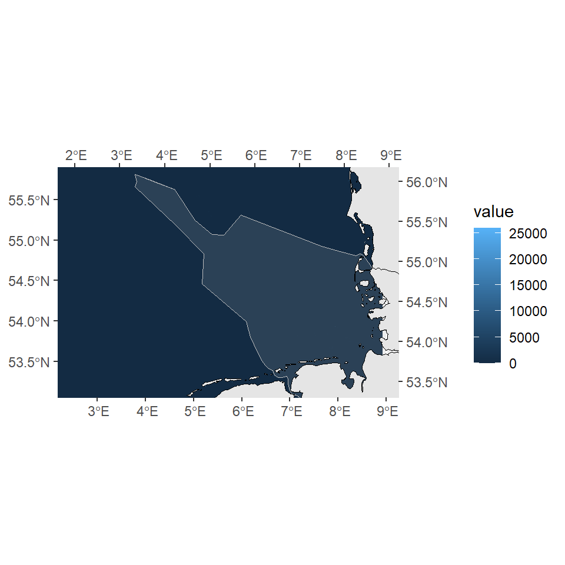
Theme
Change background colors using the arguments on theme.
ShippingTraffic_02plot<-ShippingTraffic_01plot+
theme_void()+
theme(panel.background = element_blank(),
panel.grid.major = element_blank(),
panel.grid.minor = element_blank(),
panel.border = element_rect(colour = "black", fill=NA, size=1.5))Warning: The `size` argument of `element_rect()` is deprecated as of ggplot2 3.4.0.
ℹ Please use the `linewidth` argument instead.ShippingTraffic_02plot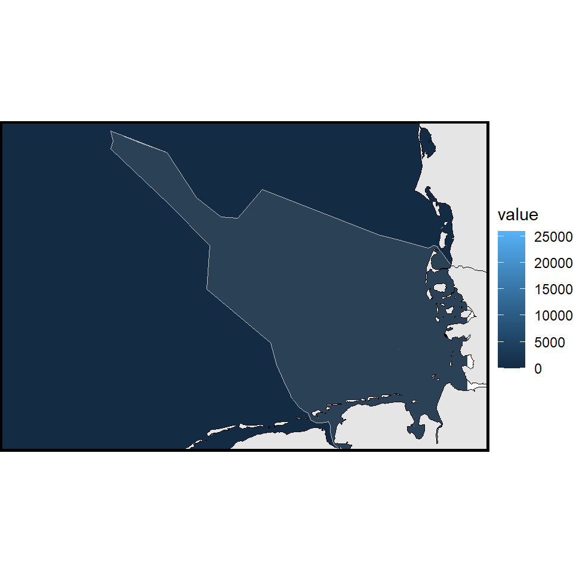
Gradient colors
Low traffic
LowShippingTraffic_03plot<-ShippingTraffic_02plot+
scale_fill_gradientn(name='Low Vessel density \n Dec 2023',
na.value = "transparent",
colours = palette_yellow<-c("#ffff3f","#eeef20","#dddf00","#d4d700","#bfd200","#aacc00","#80b918","#55a630","#2b9348","#007f5f"),
limits = c(0.00001,10),
breaks = c(2,4,6,8,10),
)
LowShippingTraffic_03plot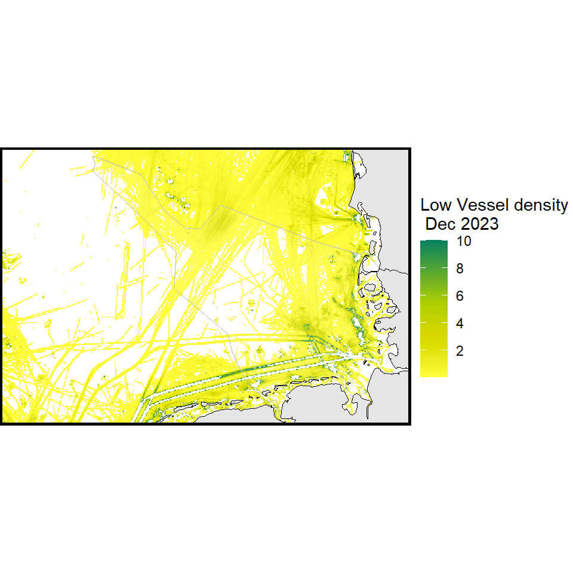
Medium traffic
MediumShippingTraffic_04plot<-ShippingTraffic_02plot+
scale_fill_gradientn(name='Medium Vessel density \n Dec 2023',
na.value = "transparent",
colours = palette_green<-c("#d8f3dc","#b7e4c7","#95d5b2","#74c69d","#52b788","#40916c","#2d6a4f","#1b4332","#081c15"),
limits = c(5,100),
breaks = c(5,20,40,60,80,100),
)
MediumShippingTraffic_04plot 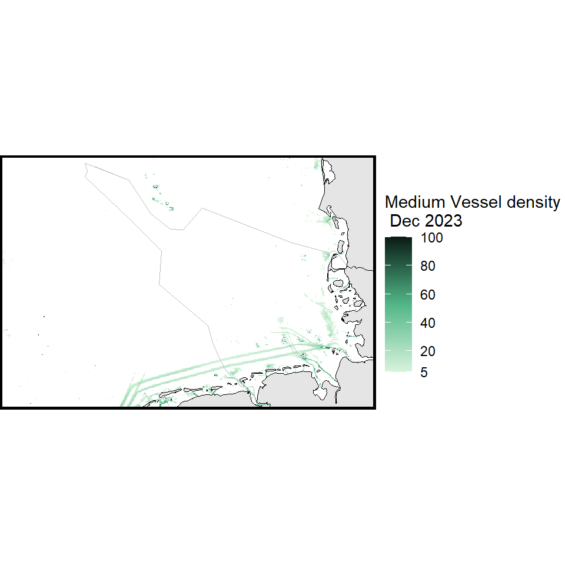
High traffic
HighShippingTraffic_06plot<-ShippingTraffic_02plot+
scale_fill_gradientn(name='High Vessel density \n Dec 2023 \n (hrs per km2)',
na.value = "transparent",
colours = palette_red<-c("#e01e37","#da1e37","#c71f37","#bd1f36","#b21e35","#a71e34","#a11d33","#85182a","#6e1423","#641220"),
limits = c(100,30000),
breaks = c(0,1000,10000,20000,30000),
)
HighShippingTraffic_06plot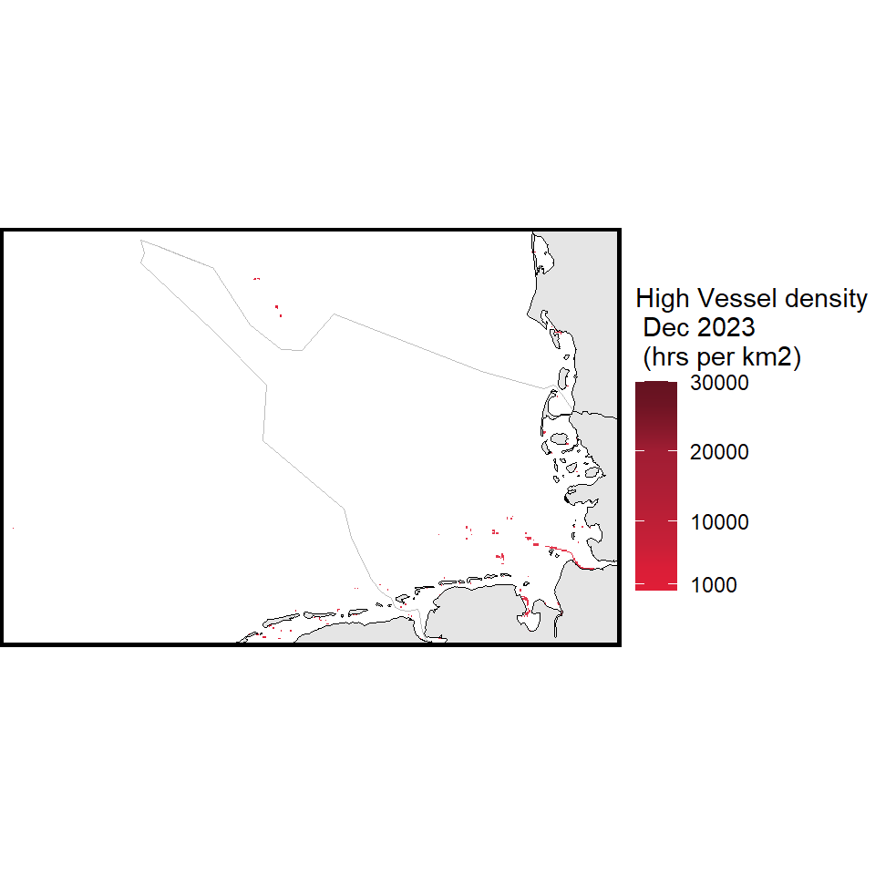
Palette
your_palette<-c("transparent", "#d8f3dc",
"#b7e4c7","#95d5b2","#74c69d","#52b788","#aacc00",
"#bfd200","#d4d700","#dddf00","#eeef20","#ffff3f",
"#e01e37","#da1e37","#c71f37", "#bd1f36","#b21e35",
"#a71e34","#a11d33","#85182a","#6e1423","#641220")Use scale_fill_gradientn and rescale to adjust the palette and the legend
ShippingTraffic_07plot<-ShippingTraffic_02plot+
scale_fill_gradientn(name='Vessel density \n Dec 2023 \n hrs per km2',
na.value = "transparent",
colours = your_palette,
limits = c(0,30000),
breaks = c(0.05,0.1,0.2,0.5,2,5,10,20,100,1000),
values = scales::rescale(c(0,0.01,0.05,0.1,0.2,0.5,2,5,10,20,100,1000)),
guide = "legend"
)
ShippingTraffic_07plot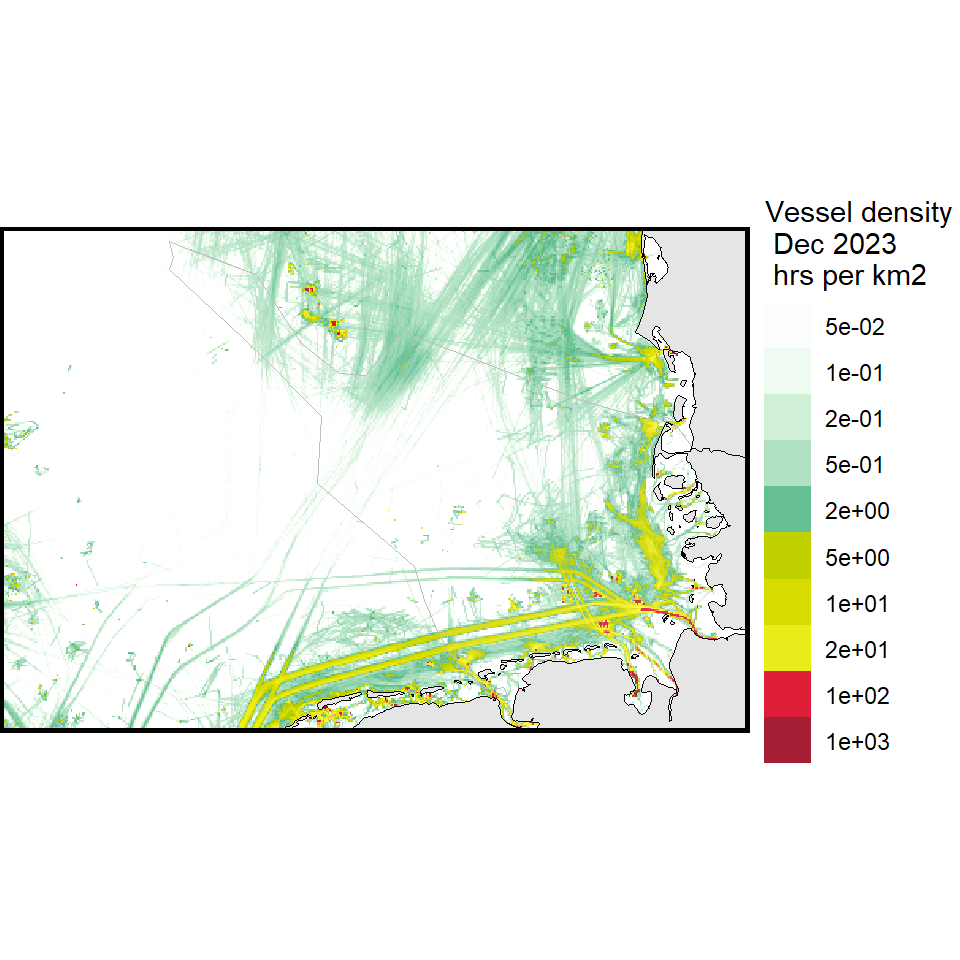
Use labels inside scale_fill_gradient to make the legend more legible
ShippingTraffic_08plot<-ShippingTraffic_02plot+
scale_fill_gradientn(name='Vessel density \n Dec 2023 \n hrs per km2',
na.value = "transparent",
colours = your_palette,
limits = c(0,30000),
breaks = c(0.05,0.1,0.2,0.5,2,5,10,20,100,1000),
values = scales::rescale(c(0,0.01,0.05,0.1,0.2,0.5,2,5,10,20,100,1000)),
guide = "legend",
labels = c("0 - 0.05","> 0.1","> 0.2","> 0.5","> 2","> 5","> 10","> 20", "> 100","> 1,000") )
ShippingTraffic_08plot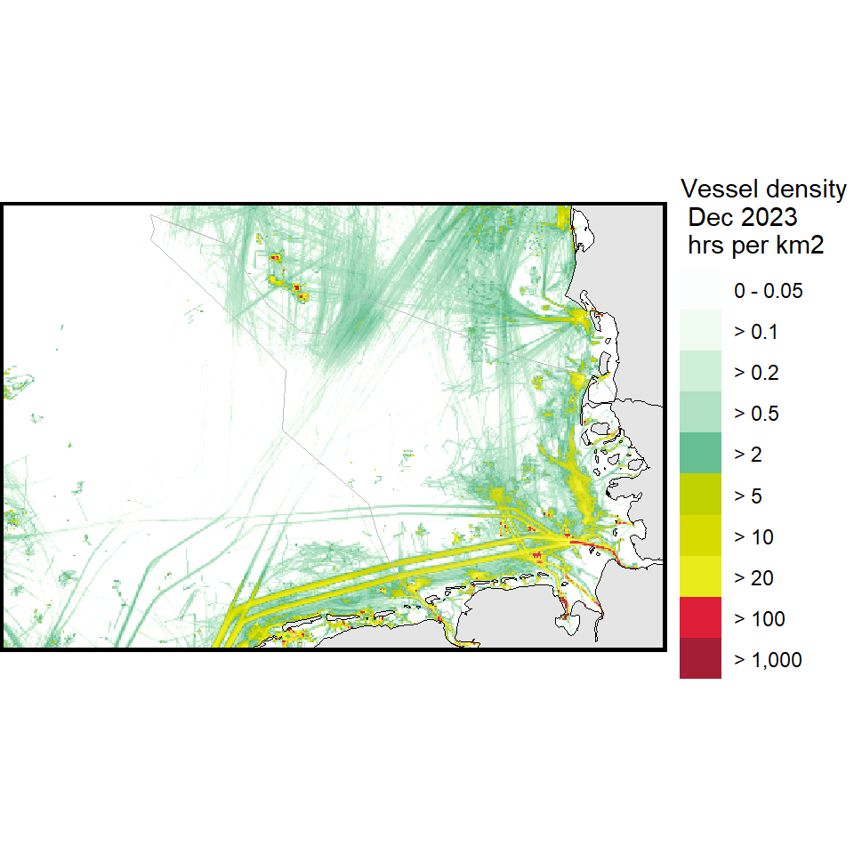
Include the legend inside the plot and change the theme, also change panel.background
ShippingTraffic_09plot<-ShippingTraffic_08plot+
theme(legend.position = c(0.20,0.50),
legend.background = element_rect(colour = FALSE, fill = FALSE),
legend.title=element_text(color='black',size=16),
legend.text=element_text(color='black',size=12),
legend.key = element_rect(colour = 'transparent', fill = 'transparent'),
legend.key.height = unit(3, "mm"))Warning: A numeric `legend.position` argument in `theme()` was deprecated in ggplot2
3.5.0.
ℹ Please use the `legend.position.inside` argument of `theme()` instead.ShippingTraffic_09plot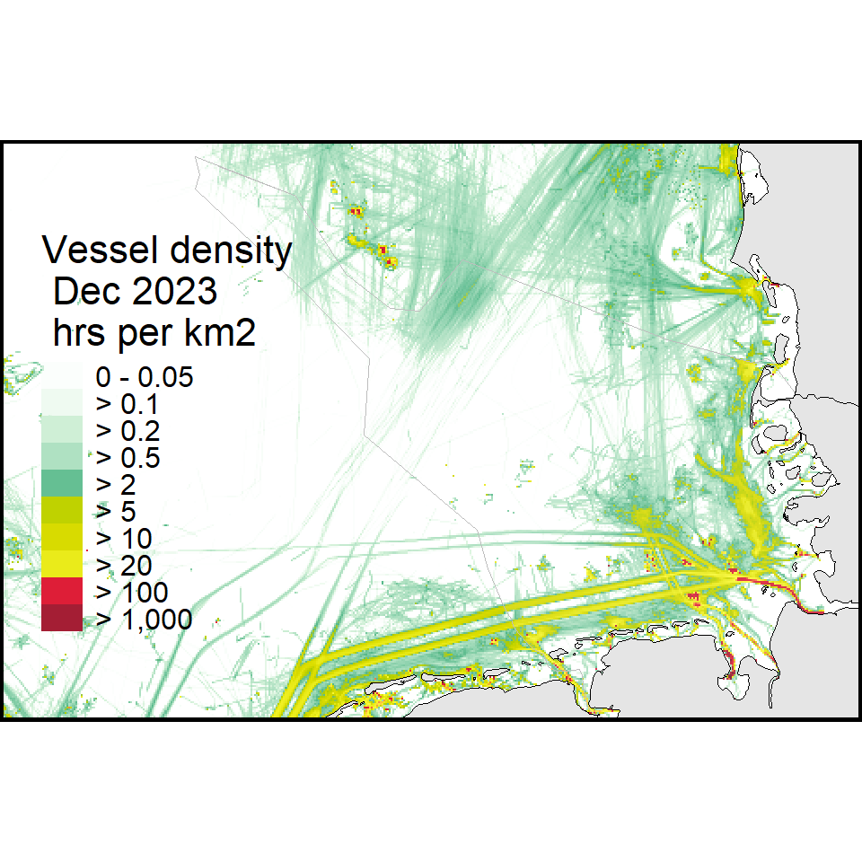
Overall
All steps together, and additionally adding protected areas.
ggplot() +
geom_spatraster(data = ShippingTraffic) +
geom_sf(data = GermanNorthSea::German_EEZ, color='black',fill='transparent',alpha=0.1, size = 1, linewidth=1)+
geom_sf(data = GermanNorthSea::German_land, colour = 'black')+
geom_sf(data = GermanNorthSea::German_SCA, colour = 'black', fill = "transparent", linewidth=1, linetype = "dashed")+
geom_sf(data = GermanNorthSea::German_natura, colour = 'black', fill = "transparent", linewidth=1, linetype = "dashed")+
coord_sf(xlim = c(3820000,4250000), ylim = c(3370000,3660000),
label_axes = list(top = "E", left = "N", bottom = 'E', right='N'))+
theme_void()+
theme(
panel.background = element_blank(),
panel.grid.major = element_blank(),
panel.grid.minor = element_blank(),
panel.border = element_rect(colour = "black", fill=NA, size=1.5))+
scale_fill_gradientn(name="Vessel density \n Inside Germany's EEZ \n Dec 2023 \n hrs per km2",
na.value = "transparent",
colours = your_palette,
limits = c(0,30000),
breaks = c(0.05,0.1,0.2,0.5,2,5,10,20,100,1000),
values = scales::rescale(c(0,0.01,0.05,0.1,0.2,0.5,2,5,10,20,100,1000)),
guide = "legend",
labels = c("0 - 0.05","> 0.1","> 0.2","> 0.5","> 2","> 5","> 10","> 20", "> 100","> 1,000"))+
theme(legend.position = c(0.15,0.50),
legend.background = element_rect(colour = FALSE, fill = FALSE),
legend.title=element_text(color='black',size=16),
legend.text=element_text(color='black',size=14),
legend.key = element_rect(colour = 'transparent', fill = 'transparent'),
legend.key.height = unit(8, "mm"))+
annotate("segment", x = 3812000, xend = 3833000,y = 3400000, yend = 3400000,
colour = "black", size=0.8, linetype = "solid")+
annotate("text", x = 3835000, y = 3400000, colour = "black", label = "Economic Exclusive Zone (EEZ)", size=6, hjust=0)+
annotate("segment", x = 3812000, xend = 3833000,y = 3380000, yend = 3380000,
colour = "black", size=0.8, linetype = "dashed")+
annotate("text", x = 3835000, y = 3380000, colour = "black", label = "Protected Areas", size=6, hjust=0)+
NULLWarning: Using `size` aesthetic for lines was deprecated in ggplot2 3.4.0.
ℹ Please use `linewidth` instead.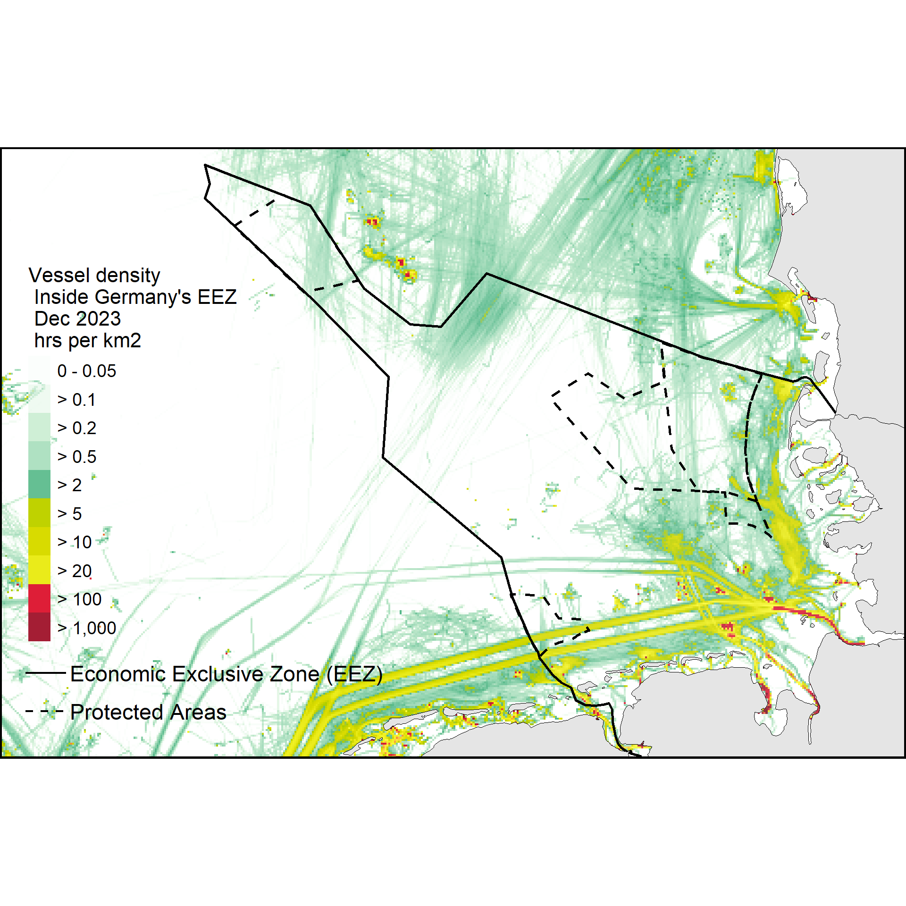
Further reading
Another potential way to evaluate shipping traffic is to obtain information from vessel traffic density such as in Womersley 2022. In this paper, gridded products were purchased from Exact Earth (https://www.exactearth.com) for the years of 2011 to 2014 at 0.25° × 0.25° grid cell resolution.
Spire maritime also provides this information if purchased.
Marine traffic is also an interesting page to visit.
For the legend inspiration comes from Global Marine Traffic.